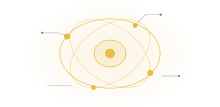
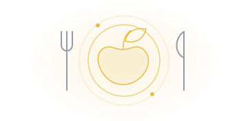
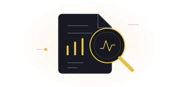
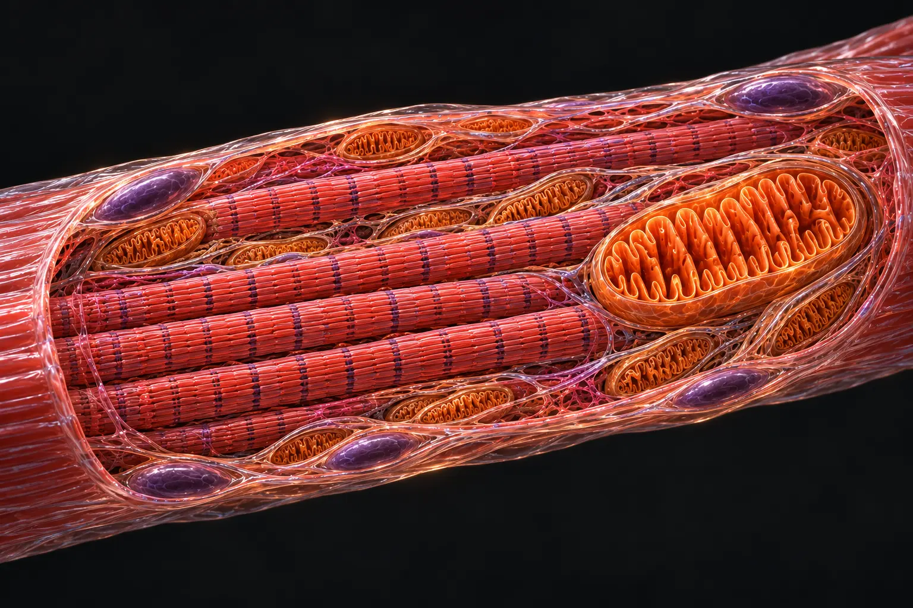

Будова і рух
Послідовність для знайомства зі структурами.
Почати маршрут →Досліджуй організм і перевіряй твердження за науковими джерелами. Постав питання й простеж його до першоджерела.
EVIDENCE UA / 6 НАПРЯМІВ
Обери картку — відкриється відповідний напрям.
ТВІЙ ПЕРШИЙ КРОК
Обери, що цікавить. Далі — моделі, пояснення та наукові джерела.

Дослідити організмЯк працюють м’язи?Відкрити модель →
Розібрати харчуванняЯкий шлях проходить їжа?Дослідити шлях їжі →
Перевірити твердженняЩо відомо про креатин?Розібрати приклад →Обери тему й почни з першого матеріалу. На сторінках маршруту є переходи до попереднього та наступного кроку.
Послідовність для знайомства зі структурами.
Почати маршрут →Перехід від органели до волокна й окремого механізму.
Почати маршрут →Від навчальної схеми до джерел і розбору конкретної теми.
Почати маршрут →Розглядай структури, перемикай елементи й досліджуй процеси крок за кроком.
Починай із загальної картини й переходь до деталей у власному темпі.
Відкривай джерела та межі висновків, щоб оцінювати твердження уважніше.
Статус наукового перегляду та межі пояснення вказано в кожному матеріалі.
Три короткі запитання допоможуть нам поліпшити подачу й зручність. Форма нічого не надсилає та не зберігає на сервері: зберіть текст і передайте людині, яка поділилася сайтом. Не вказуйте персональних чи медичних даних.
БІБЛІОТЕКА ДОКАЗІВ
Десять добавок: коротке пояснення, межі висновку й шлях до першоджерела. Без обіцянок результату.
Відкрити каталог добавок →Нічого не знайдено. Спробуй іншу назву.
Почати з розбору креатину →Одна з найбільш досліджених спортивних добавок — без маркетингових перебільшень.
Креатин може додатково покращувати приріст сили під час силових тренувань.
Креатин разом із силовими тренуваннями може збільшувати безжирову масу.
Завантаження прискорює насичення м’язів креатином, але не є обов’язковим для його підвищення.
Немає переконливих доказів, що креатин обов'язково треба приймати саме до або саме після тренування.
Креатин може підвищити креатинін без того, щоб це автоматично означало пошкодження нирок.
Фосфокреатин допомагає швидко ресинтезувати ATP з ADP. Фермент — креатинкіназа.

М’язове волокно · художня ілюстраціяДопомагає швидко ресинтезувати ATP з ADP.
Художня навчальна ілюстрація. Масштаб, кількість і розташування структур умовні. Позначки ATP, PCr та ферменту — точки пояснення, а не видимі молекули або виміряні концентрації.
VIS-MUSCLE-ENERGY-001 · версія 1,0 · попередній огляд 10 жовтня 2026 р.
Якісна схема, не експериментальні криві. Вертикальна позиція й відстані не означають концентрації чи тривалість. За екстремальних умов ATP також може знижуватися.
ATP постійно витрачається й ресинтезується. Фосфокреатин — швидкий буфер для змін потреби в ATP.
Кислотно-основний баланс підтримується.
Спокій не означає, що клітина перестає використовувати ATP. Креатинкіназа каталізує оборотну реакцію; напрям залежить від умов, а не лише від натискання кнопки.
Ми не обчислюємо буферну ємність, транспорт протонів, доставку кисню, температуру, pH або ферментну кінетику. До перевіреної числової моделі ці величини не додаються як «реальні» показники.
Опубліковані моделі зіставляють PCr, pH та ресинтез ATP із дослідом. Тут показано лише якісну логіку, не їхній числовий розрахунок. Механізм не є доказом приросту сили від добавки.
Гідроліз ATP до ADP і неорганічного фосфату (Pi) спряжений із роботою клітини. Креатин не створює енергію з нічого.
Навчальна якісна модель. Три стани, інші шляхи ресинтезу ATP та роль H⁺/pH пояснено, але концентрації, швидкості й pH чисельно не обчислюються. Криві та розміри символів умовні: це не вимірювання людини й не прогноз приросту сили.
VIS-ATP-PCR-001 · версія 1,1 · дата попереднього огляду 10 жовтня 2026 р.
Оцінюємо кожне твердження, а не добавку загалом. Натисни «Чому ми так стверджуємо?», щоб побачити конкретні результати та першоджерела.
Креатин може додатково покращувати приріст сили під час силових тренувань.
HIGH — Висока впевненістьПопередня оцінка · науковий перегляд триваєСучасний трирівневий метааналіз 63 досліджень (n=1489) показав додаткове покращення як верхньої, так і нижньої сили при поєднанні креатину із силовими тренуваннями.
Переважно здорові дорослі, які виконують силові тренування.
Не всі силові тести демонструють однакову величину ефекту.
Креатин разом із силовими тренуваннями може збільшувати безжирову масу.
MODERATE — Помірна впевненістьПопередня оцінка · науковий перегляд триваєМетааналіз 2024 року 12 досліджень показав +1,14 кг безжирової маси (95% ДІ 0,69–1,59) при додаванні креатину до силових тренувань; сучасний метааналіз 2026 також показав позитивний ефект на безжирову масу.
Дорослі, які виконують силові тренування; один ключовий метааналіз включав осіб молодших 50 років.
Різні методи оцінки складу тіла мають різні обмеження.
У досліджених режимах креатин не показує переконливого погіршення функції нирок.
MODERATE — Помірна впевненістьПопередня оцінка · науковий перегляд триваєМетааналіз 2026 року 26 досліджень (n=1036) не показав значущої зміни Cr-EDTA GFR, albuminuria чи proteinuria, хоча creatinine-based estimates змінювалися.
Рандомізовані дослідження включали здорових учасників, а в окремих оглядах — також відібраних учасників із хронічною хворобою нирок. Це не всі клінічні популяції.
Склад популяцій, дози та тривалість досліджень неоднорідні.
Креатин може підвищити креатинін без того, щоб це автоматично означало пошкодження нирок.
MODERATE — Помірна впевненістьПопередня оцінка · науковий перегляд триваєУ метааналізі 2026 креатинін крові зростав на 0,14 мг/дл (95% ДІ 0,05–0,22), тоді як Cr-EDTA GFR істотно не змінювався.
Учасники рандомізованих досліджень прийому креатину.
креатинін крові у метааналізі 2026 мав дуже високу неоднорідність (I² ≈ 94%).
Доведеної послідовної переваги альтернативних форм над моногідратом немає.
LOW — Низька впевненістьПопередня оцінка · науковий перегляд триваєОгляд включав 17 рандомізованих плацебо-контрольованих досліджень, але лише 3 прямо порівнювали альтернативну форму з моногідратом.
Здорові учасники рандомізованих плацебо-контрольованих досліджень.
Невелика кількість прямих порівнянь.
Завантаження прискорює насичення м’язів креатином, але не є обов’язковим для його підвищення.
MODERATE — Помірна впевненістьПопередня оцінка · науковий перегляд триває20 г/добу протягом 6 днів підвищували загальний креатин у м’язах приблизно на 20%; 3 г/добу протягом 28 днів давали подібне, але поступове підвищення.
Здорові дорослі чоловіки в базовому дослідженні насичення м’язів креатином.
Базове дослідження включало 31 чоловіка.
Немає переконливих доказів, що креатин обов'язково треба приймати саме до або саме після тренування.
VERY LOW — Дуже низька впевненістьПопередня оцінка · науковий перегляд триваєУ 8-тижневому дослідженні не виявлено різниці в прирості сили чи товщини м’язів між прийомом безпосередньо до та після тренування.
Молоді фізично активні дорослі в прямому дослідженні прийому до або після тренування.
Дуже мала база прямих порівнянь.
Правило «кава скасовує креатин» не підтримується достатньо узгодженими доказами.
LOW — Низька впевненістьПопередня оцінка · науковий перегляд триваєОгляд 2022 року включав 10 досліджень: за тривалого сумісного прийому зустрічалися як сигнали послаблення ефекту, так і відсутність взаємодії або синергія.
Здорові учасники досліджень сумісного прийому креатину та кофеїну.
Протоколи, дози кофеїну й час прийому суттєво різняться.
Практичний орієнтир для здорових дорослих
Завантаження — спосіб швидше наситити м’язові запаси. Чи впливає воно на результати тренувань, цей твердження не оцінює.
Опціонально: приблизно 0,3 г/кг/добу сумарно, розділені на кілька прийомів, протягом 5–7 днів; потім 3–5 г/добу.
Регулярність прийому має кращу практичну основу, ніж жорстке правило «тільки до» або «тільки після».
Це практичні орієнтири з позиційного документа ISSN, а не окреме твердження про ефект і не персональне призначення. За хвороб нирок, вагітності або складного лікування потрібна індивідуальна оцінка лікаря.
Практичний режим · Kreider RB et al. J Int Soc Sports Nutr. 2017. ↗
У досліджених режимах креатин не показує переконливого погіршення функції нирок.
Підвищений креатинін після початку креатину слід інтерпретувати в контексті, а не автоматично трактувати як пошкодження нирок.
Завантаження прискорює насичення м’язів креатином, але не є обов’язковим для його підвищення.
Завантаження — спосіб швидше наситити м’язові запаси. Чи впливає воно на результати тренувань, цей твердження не оцінює.
Немає переконливих доказів, що креатин обов'язково треба приймати саме до або саме після тренування.
Регулярність прийому має кращу практичну основу, ніж жорстке правило «тільки до» або «тільки після».
Правило «кава скасовує креатин» не підтримується достатньо узгодженими доказами.
Не варто перетворювати неоднорідні дані на категоричну заборону кави з креатином.
Доведеної послідовної переваги альтернативних форм над моногідратом немає.
Теза «дорожча/нова форма краща» потребує прямого доказу; наявна база цього послідовно не показує.
Джерела пов’язані з твердженнями через окремі записи результатів досліджень. Метааналізи можуть включати ті самі первинні дослідження — кількість оглядів не дорівнює кількості незалежних доказів.
Wang H, Wang H, Xin X, Yi Z. J Int Soc Sports Nutr. 2026.
Сила верхньої частини тіла — Hedges' g (стандартизована різниця): 0,54 · ДІ: див. першоджерело
Сила нижньої частини тіла — Hedges' g (стандартизована різниця): 0,55 · ДІ: див. першоджерело
Безжирова маса — Hedges' g (стандартизована різниця): 0,3 · ДІ: див. першоджерело
Пошук до 21.04.2025; Hedges’ g; трирівневий метааналіз із випадковими ефектами.
Фінансування й конфлікти інтересів: ще не перевірено за повним текстом
Перевірка метаданих: 10 жовтня 2026 р. · SRC-000001
Desai I et al. J Strength Cond Res. 2024.
Безжирова маса — різниця середніх: 1,14 кг · 95% ДІ 0,69–1,59
Попередньо зареєстрований систематичний огляд; основний результат — безжирова маса.
Фінансування й конфлікти інтересів: ще не перевірено за повним текстом
Перевірка метаданих: 10 жовтня 2026 р. · SRC-000002
de Souza Almeida A et al. Int Urol Nephrol. 2026.
Креатинін крові — різниця середніх: 0,14 мг/дл · 95% ДІ 0,05–0,22
ШКФ, розрахована за креатиніном — різниця середніх: -10,75 мл/хв · 95% ДІ -17,48–-4,02
ШКФ, виміряна методом Cr-EDTA — різниця середніх: 5,89 мл/хв · 95% ДІ -0,3–12,08
Альбумінурія / протеїнурія — Значущої загальної різниці в альбумінурії чи протеїнурії не виявлено.
Рандомізовані дослідження до березня 2025 року; основний результат — креатинін крові; включено прямі та креатинін-залежні оцінки фільтрації.
Фінансування й конфлікти інтересів: ще не перевірено за повним текстом
Перевірка метаданих: 10 жовтня 2026 р. · SRC-000003
Kabiri Naeini E et al. BMC Nephrol. 2025.
Швидкість клубочкової фільтрації (ШКФ) — Метааналіз не виявив статистично значущої різниці ШКФ між креатином і контролем.
Основні результати — креатинін крові та ШКФ; пошук до березня 2025 року.
Фінансування й конфлікти інтересів: ще не перевірено за повним текстом
Перевірка метаданих: 10 жовтня 2026 р. · SRC-000004
Tsiaras A et al. J Ren Nutr. 2026.
Креатинін крові — різниця середніх: 0,13 мг/дл · 95% ДІ 0,07–0,18
Розрахована ШКФ — різниця середніх: -5,2 мл/хв/1,73 м² · 95% ДІ -15–4,6
Основні результати — креатинін крові, сечовина та розрахована ШКФ.
Фінансування й конфлікти інтересів: ще не перевірено за повним текстом
Перевірка метаданих: 10 жовтня 2026 р. · SRC-000005
Fazio C, Elder CL, Harris MM. J Strength Cond Res. 2022.
Перевага альтернативної форми над моногідратом — Включено 17 плацебо-контрольованих досліджень, лише 3 — прямі порівняння з моногідратом; послідовної переваги не встановлено.
Систематичний огляд за PICOS: продуктивність і склад тіла.
Фінансування й конфлікти інтересів: ще не перевірено за повним текстом
Перевірка метаданих: 10 жовтня 2026 р. · SRC-000006
Hultman E et al. J Appl Physiol. 1996.
Концентрація загального креатину в м’язах — 20 г/добу протягом 6 днів збільшували загальний креатин м’язів приблизно на 20%; 3 г/добу протягом 28 днів давали подібне, але поступове підвищення.
Порівняння режимів прийому з прямим вимірюванням загального креатину в м’язах.
Фінансування й конфлікти інтересів: ще не перевірено за повним текстом
Перевірка метаданих: 10 жовтня 2026 р. · SRC-000007
Forbes SC, Krentz JR, Candow DG. J Sports Med Phys Fitness. 2021.
Сила й товщина м’язів — Сила й товщина м’язів зростали; різниці між прийомом безпосередньо до та після тренування не виявлено.
8 тижнів; 0,1 г/кг креатину безпосередньо до або після одностороннього силового тренування.
Фінансування й конфлікти інтересів: ще не перевірено за повним текстом
Перевірка метаданих: 10 жовтня 2026 р. · SRC-000008
Elosegui S et al. Int J Sport Nutr Exerc Metab. 2022.
Взаємодія креатину та кофеїну щодо продуктивності — За тривалого сумісного прийому: 2 дослідження повідомили можливе послаблення ефекту, 3 — відсутність взаємодії, 1 — синергію; разові протоколи також різнилися.
Систематичний пошук до листопада 2021 року; разові й тривалі протоколи.
Фінансування й конфлікти інтересів: ще не перевірено за повним текстом
Перевірка метаданих: 10 жовтня 2026 р. · SRC-000009
Kreider RB et al. J Int Soc Sports Nutr. 2017.
Огляд механізму ATP–PCr і практичних режимів. Не використовується як заміна для конкретного результату оцінки.
Фінансування й конфлікти інтересів: ще не перевірено за повним текстом
Перевірка метаданих: 10 жовтня 2026 р. · SRC-000010
Korzeniewski B, Rossiter HB. J Physiol. 2015.
Динаміку PCr, pH і шляхів ресинтезу ATP використано для зіставлення математичної моделі з дослідом. Наш інтерактив лише якісно пояснює процеси: код і числові параметри цієї моделі тут не відтворені.
Фінансування й конфлікти інтересів: ще не перевірено за повним текстом
Перевірка метаданих: 10 жовтня 2026 р. · SRC-000011
Отримуємо назви, авторів, роки та PMID безпосередньо з PubMed. Публікації з'являються тут за запитом; це не автоматичний доказ ефективності.
Освітній матеріал, не діагностика й не персональна медична рекомендація.
← На головнуПротеїн — це білок, який ми отримуємо з їжі: молочних продуктів, яєць, риби, м’яса, бобових. Протеїновий порошок — лише зручне додаткове джерело білка.
Додатковий білок трохи збільшує приріст сили й безжирової маси, але тільки тоді, коли є силові тренування. Головний результат дають самі тренування.
Середній приріст за 6–52 тижні силових тренувань (метааналіз Morton, 49 РКД).
Ширина смуги — частка від приросту лише від тренувань. Середні значення, не прогноз для конкретної людини.
З тренуваннями білок трохи додає сили. Головне — самі тренування.
Рівень впевненості не оціненоУ метааналізі Morton (49 РКД) білок додав у середньому 2,49 кг до приросту 1ПМ, тоді як самі тренування дали близько 27 кг. У тренованих людей ефект був помітний, у новачків — статистично не підтверджений. Огляди Nunes 2022 і Tagawa 2022 показують такий самий напрям: невеликий ефект і лише разом із тренуваннями.
Здорові дорослі без обмеження калорій, силові тренування щонайменше 6 тижнів, 2+ рази на тиждень.
Ефект невеликий порівняно з ефектом тренувань; це середнє по дослідженнях, а не прогноз для конкретної людини.
З тренуваннями білок трохи збільшує приріст безжирової маси.
Рівень впевненості не оціненоУ Morton білок додав у середньому 0,30 кг безжирової маси до 1,1 кг, які дали самі тренування; результати досліджень мало відрізнялися між собою. Nunes 2022 (62 дослідження) отримав такий самий невеликий ефект.
Здорові дорослі без обмеження калорій, силові тренування щонайменше 6 тижнів, 2+ рази на тиждень.
Безжирова маса — це все, крім жиру (вода, органи, кістки), а не лише нові м’язи.
Орієнтир — близько 1,6 г білка на кг на добу. Це не точна норма.
Рівень впевненості не оціненоУ Morton за даними 42 груп досліджень (723 учасники) приріст безжирової маси переставав зростати близько 1,62 г/кг/добу, але інтервал широкий (1,03–2,20 г/кг/добу), а сам злам не досяг статистичної значущості. Tagawa 2022 для сили отримав схоже плато — близько 1,5 г/кг/добу.
Здорові дорослі без обмеження калорій, силові тренування щонайменше 6 тижнів, 2+ рази на тиждень.
Межа визначена за групами досліджень, а не за окремими людьми; p = 0,079.
Без тренувань білок силу не збільшує.
Рівень впевненості не оціненоУ дозозалежному метааналізі Tagawa 2022 (82 статті) білок збільшував приріст сили лише разом із силовими тренуваннями (+2,01%). Без тренувань різниця становила 0,13% з інтервалом по обидва боки від нуля.
Здорові дорослі в РКД без програми силових тренувань.
Відсутність ефекту в метааналізі не доводить точно нульового ефекту.
Для старших людей даних мало й вони неоднозначні.
Рівень впевненості не оціненоУ Morton в учасників, старших за 45 років, ефекту на безжирову масу не виявили (0,06 кг), у молодших він був 0,55 кг. Проте старші отримували в середньому лише 20 г додаткового білка на добу проти 42 г у молодших. У Nunes 2022 ефект у людей від 65 років був значущим при 1,2–1,59 г/кг/добу.
Здорові дорослі старше 45 (Morton) або від 65 років (Nunes) із силовими тренуваннями.
У Morton лише 13 досліджень зі старшими учасниками.
Прийом до чи після тренування не змінював приросту безжирової маси (Casuso 2025, PMID 40647175); у Morton доза після тренування не впливала на ефект.
Мережеві метааналізи (Zhou 2023, PMID 38039960; Drummond 2026, PMID 41635649) дають рейтинги з широкою невизначеністю; переможця за рейтингом не оголошуємо.
Це практичні орієнтири редакції, а не результат досліджень: метааналізи не порівнювали ціни й продукти.
Morton RW et al. · 2018
Приріст 1ПМ, усі учасники — Різниця середніх: 2,49 кг · 95% ДІ 0,64–4,33
Приріст 1ПМ, треновані — Різниця середніх: 4,27 кг · 95% ДІ 0,61–7,94
Приріст 1ПМ, нетреновані — Різниця середніх: 0,99 кг · 95% ДІ -0,27–2,25
Приріст безжирової маси — Різниця середніх: 0,3 кг · 95% ДІ 0,09–0,52
Точка зламу: загальний білок і приріст безжирової маси — Точка зламу: 1,62 г/кг/добу · 95% ДІ 1,03–2,2
Безжирова маса, старше 45 років — Різниця середніх: 0,06 кг · 95% ДІ -0,14–0,26
Безжирова маса, молодше 45 років — Різниця середніх: 0,55 кг · 95% ДІ 0,3–0,81
Зміна ефекту на безжирову масу з віком — Коефіцієнт метарегресії: -0,01 кг на рік віку · 95% ДІ -0,02–0
Статус публікації ще не перевірено.
Повний текст прочитано в PubMed Central. Метааналіз випадкових ефектів, метарегресія, аналіз точки зламу.
Фінансування й конфлікти інтересів: ще не перевірено за повним текстом
Перевірка метаданих: 18 жовтня 2026 р. · SRC-000012
Nunes EA et al. · 2022
Жим лежачи, учасники до 65 років — Стандартизована різниця середніх: 0,18 · 95% ДІ 0,03–0,33
Приріст безжирової маси з силовими тренуваннями — Стандартизована різниця середніх: 0,22 · 95% ДІ 0,14–0,3
Безжирова маса, від 65 років — Ефект на безжирову масу був значущим у людей від 65 років при 1,2–1,59 г білка/кг/добу із силовими тренуваннями.
Статус публікації ще не перевірено.
Прочитано анотацію в PubMed. Протокол PROSPERO CRD42020159001; трирівневий метааналіз.
Фінансування й конфлікти інтересів: ще не перевірено за повним текстом
Перевірка метаданих: 18 жовтня 2026 р. · SRC-000055
Tagawa R et al. · 2022
Приріст сили з силовими тренуваннями — Різниця середніх: 2,01 % · 95% ДІ 1,09–2,93
Дозозалежність приросту сили — Приріст сили зростав на 0,72% (95% ДІ 0,40–1,04) на кожні 0,1 г/кг/добу загального білка до 1,5 г/кг/добу; далі додаткового приросту не спостерігали.
Приріст сили без силових тренувань — Різниця середніх: 0,13 % · 95% ДІ -1,53–1,79
Статус публікації ще не перевірено.
Прочитано анотацію в PubMed. Пошук лише в PubMed та Ichushi-Web; модель випадкових ефектів і сплайн.
Фінансування й конфлікти інтересів: ще не перевірено за повним текстом
Перевірка метаданих: 18 жовтня 2026 р. · SRC-000056
Простою мовою: як читати метааналіз MortonNIH ODS — білок і спортивні добавки ↗
Науковий перегляд: не завершено · Формулювання погоджено 18 жовтня 2026 року · Матеріал освітній і не є персональною медичною рекомендацією.
Інші добавки
Попередній огляд · рівні впевненості не оцінено
Наявний матеріал перенесено без зміни висновків. Повна оцінка доказів ще не завершена.
Кофеїн може покращувати окремі показники витривалості та спортивної працездатності.
Кофеїн і спортивна продуктивність
Наведені нижче джерела збережено з попередньої сторінки. Їхню відповідність кожному окремому твердженню ще потрібно перевірити; саме посилання на статтю не є доказом усіх висновків.
Рівень впевненості не оцінено. Це не те саме, що «низька впевненість» або «недостатньо даних» після оцінювання.
У метааналізі 2026 року гострий прийом безводного кофеїну скорочував середній час завершення аеробних тестів порівняно з плацебо у включених дослідженнях.
Здорові дорослі 18–59 років. Результат — час завершення тесту; менший час означає кращу результативність.
Низькі дози за класифікацією авторів: стандартизована різниця середніх -0,27; 95% ДІ -0,44…-0,11.
Помірні дози за класифікацією авторів: стандартизована різниця середніх -0,52; 95% ДІ -0,77…-0,28.
Dose-Response Effect of Oral Caffeine Use on Aerobic Exercise Performance: A Systematic Review and Meta-Analysis · 2026. Анотація: Methods / Results.
PubMed · PMID 42356375 ↗Фінансування й конфлікти інтересів: ще не перевірено за повним текстом.
Рівень впевненості Evidence UA не оцінено.
Враховуй час прийому, кофеїн з інших джерел і вплив на сон.
Практичний текст не оформлено як окреме оцінене наукове твердження.
Можливі тривожність, серцебиття, порушення сну. Позиційний документ — не окреме рандомізоване дослідження.
Пошук усіх релевантних досліджень і аналіз суперечливих результатів не завершено.
Джерело базових пояснень, не автоматичний доказ ефективності.
Відкрити довідник NIH ↗Фінансування й конфлікти інтересів: ще не перевірено за повним текстом
Вибрана публікація зі старого досьє; конкретні результати ще не структуровано.
PubMed · PMID 33388079 ↗Фінансування й конфлікти інтересів: ще не перевірено за повним текстом
Martins et al. · Nutrients · 2026;18(12)
Публікація, з якої взято блок результатів у цьому досьє. Відповідність окремим твердженням ще перевіряється.
PubMed · PMID 42356375 ↗ · DOI ↗Фінансування й конфлікти інтересів: ще не перевірено за повним текстом
Кофеїн — стимулятор, який міститься в каві, чаї та деяких добавках. Він впливає на відчуття бадьорості й навантаження.
Може покращувати окремі показники спортивної працездатності.
Реакція індивідуальна. Порушення сну, тривожність і серцебиття можуть переважити користь.
Позиційний документ International Society of Sports Nutrition (2021), який узагальнює наукові дані.
Кофеїн може покращувати окремі показники витривалості та спортивної працездатності.
Враховуй час прийому, кофеїн з інших джерел і вплив на сон.
Можливі тривожність, серцебиття, порушення сну. Позиційний документ — не окреме рандомізоване дослідження.
Відсотки без конкретного показника, популяції, порівняння й довірчого інтервалу вводять в оману. Для кожного результату ми спочатку перевіряємо першоджерело. Деякі досьє поки мають якісний, а не кількісний розбір.
Попередній огляд · рівні впевненості не оцінено
Наявний матеріал перенесено без зміни висновків. Повна оцінка доказів ще не завершена.
Дані для різних серцево-судинних результатів неоднакові; загальні обіцянки «для всього» не підтверджені.
Омега-3 і серцево-судинні наслідки
Наведені нижче джерела збережено з попередньої сторінки. Їхню відповідність кожному окремому твердженню ще потрібно перевірити; саме посилання на статтю не є доказом усіх висновків.
Рівень впевненості не оцінено. Це не те саме, що «низька впевненість» або «недостатньо даних» після оцінювання.
В огляді Cochrane 2020 року чітку перевагу довголанцюгових омега-3 щодо сукупних серцево-судинних подій не встановлено.
Цей результат стосується довголанцюгових омега-3, а не автоматично ALA. Аналіз цієї кінцевої точки: 43 дослідження, 140 482 учасники.
Серцево-судинні події: відношення ризиків 0,96; 95% ДІ 0,92…1,01.
Cochrane — огляд омега-3 та серцево-судинних результатів · 2020. Анотація: Main results.
PubMed · PMID 32114706 ↗Фінансування й конфлікти інтересів: ще не перевірено за повним текстом.
Рівень впевненості Evidence UA не оцінено.
Починай із оцінки раціону та конкретної мети. Для лікування станів — узгоджуй із лікарем.
Практичний текст не оформлено як окреме оцінене наукове твердження.
Результати залежать від складу, дози, популяції та кінцевої точки; не підміняй лікування добавкою.
Пошук усіх релевантних досліджень і аналіз суперечливих результатів не завершено.
Джерело базових пояснень, не автоматичний доказ ефективності.
Відкрити довідник NIH ↗Фінансування й конфлікти інтересів: ще не перевірено за повним текстом
Вибрана публікація зі старого досьє; конкретні результати ще не структуровано.
PubMed · PMID 32114706 ↗Фінансування й конфлікти інтересів: ще не перевірено за повним текстом
Омега-3 — група жирних кислот. EPA і DHA містяться, зокрема, у рибі; ALA — у деяких рослинних продуктах.
Розглядати конкретну мету: харчування, рівень тригліцеридів або окремі медичні показання.
Капсула не є універсальним захистом серця. Різні склади, дози та групи людей дають різні результати.
Кокранівський систематичний огляд рандомізованих досліджень (2020).
Дані для різних серцево-судинних результатів неоднакові; загальні обіцянки «для всього» не підтверджені.
Починай із оцінки раціону та конкретної мети. Для лікування станів — узгоджуй із лікарем.
Результати залежать від складу, дози, популяції та кінцевої точки; не підміняй лікування добавкою.
Відсотки без конкретного показника, популяції, порівняння й довірчого інтервалу вводять в оману. Для кожного результату ми спочатку перевіряємо першоджерело. Деякі досьє поки мають якісний, а не кількісний розбір.
Попередній огляд · рівні впевненості не оцінено
Наявний матеріал перенесено без зміни висновків. Повна оцінка доказів ще не завершена.
Дефіцит і безпідставне застосування високих доз — різні клінічні ситуації.
Вітамін D і профілактика переломів
Наведені нижче джерела збережено з попередньої сторінки. Їхню відповідність кожному окремому твердженню ще потрібно перевірити; саме посилання на статтю не є доказом усіх висновків.
Рівень впевненості не оцінено. Це не те саме, що «низька впевненість» або «недостатньо даних» після оцінювання.
Старий текст спирався на одне рандомізоване дослідження; блок результатів у цьому досьє взято з метааналізу 2026 року, його додано до джерел.
У метааналізі 2026 року вітамін D окремо не показав чіткої переваги щодо запобігання будь-яким переломам у включених популяціях.
Дорослі без медикаментозного лікування остеопорозу у включених дослідженнях. Порівняння — плацебо або відсутність втручання. Це не результат для комбінації вітаміну D з кальцієм.
Будь-який перелом · 36 досліджень, 92 045 учасників: відношення ризиків 1; 95% ДІ 0,95…1,06.
Calcium, vitamin D, or combined supplementation to prevent fractures and falls: systematic review and meta-analysis · 2026. Анотація: Eligibility criteria / Results.
PubMed · PMID 42161415 ↗Фінансування й конфлікти інтересів: ще не перевірено за повним текстом.
Рівень впевненості Evidence UA не оцінено.
Рішення про добавку залежить від факторів ризику, клінічної ситуації та рекомендацій лікаря.
Практичний текст не оформлено як окреме оцінене наукове твердження.
Надлишок може бути шкідливим; не роби висновків про всіх людей з одного дослідження.
Пошук усіх релевантних досліджень і аналіз суперечливих результатів не завершено.
Джерело базових пояснень, не автоматичний доказ ефективності.
Відкрити довідник NIH ↗Фінансування й конфлікти інтересів: ще не перевірено за повним текстом
Вибрана публікація зі старого досьє; конкретні результати ще не структуровано.
PubMed · PMID 35939577 ↗Фінансування й конфлікти інтересів: ще не перевірено за повним текстом
Massé et al. · BMJ · 2026;393:e088050
Публікація, з якої взято блок результатів у цьому досьє. Відповідність окремим твердженням ще перевіряється.
PubMed · PMID 42161415 ↗ · DOI ↗Фінансування й конфлікти інтересів: ще не перевірено за повним текстом
Вітамін D допомагає організму засвоювати кальцій і підтримувати здоров’я кісток. Він надходить із певних продуктів і утворюється в шкірі.
Потреба в додатковому прийомі залежить від забезпеченості та конкретного стану людини.
Більше не означає краще. Висновки про дефіцит не слід переносити на всіх; надлишок може бути шкідливим.
Велике рандомізоване дослідження VITAL: додатковий вітамін D у загалом здорових дорослих (2022).
Дефіцит і безпідставне застосування високих доз — різні клінічні ситуації.
Рішення про добавку залежить від факторів ризику, клінічної ситуації та рекомендацій лікаря.
Надлишок може бути шкідливим; не роби висновків про всіх людей з одного дослідження.
Відсотки без конкретного показника, популяції, порівняння й довірчого інтервалу вводять в оману. Для кожного результату ми спочатку перевіряємо першоджерело. Деякі досьє поки мають якісний, а не кількісний розбір.
Попередній огляд · рівні впевненості не оцінено
Наявний матеріал перенесено без зміни висновків. Повна оцінка доказів ще не завершена.
Необхідний для нервової та м’язової функції; важливе достатнє споживання.
Магній: функції, дефіцит і безпека
Наведені нижче джерела збережено з попередньої сторінки. Їхню відповідність кожному окремому твердженню ще потрібно перевірити; саме посилання на статтю не є доказом усіх висновків.
Рівень впевненості не оцінено. Це не те саме, що «низька впевненість» або «недостатньо даних» після оцінювання.
Старий текст спирався на довідник NIH; блок результатів у цьому досьє взято з Cochrane-огляду 2020 року, його додано до джерел.
У включених дослідженнях огляду Cochrane чітку перевагу магнію щодо частоти ідіопатичних судом переважно у літніх людей не встановлено.
Результат через чотири тижні: різниця процентної зміни кількості судом від вихідного рівня. Це не кількість судом і не відсоток ефективності добавки.
3 дослідження, 177 учасників: різниця середніх, процентні пункти -9,59; 95% ДІ -23,14…3,97.
Magnesium for skeletal muscle cramps · 2020. Офіційний виклад Cochrane: Main results.
PubMed · PMID 32956536 ↗Фінансування й конфлікти інтересів: ще не перевірено за повним текстом.
Рівень впевненості Evidence UA не оцінено.
Спочатку оцінюй раціон: горіхи, насіння, бобові та цільнозернові продукти. Не ототожнюй втому з дефіцитом магнію.
Практичний текст не оформлено як окреме оцінене наукове твердження.
Добавки можуть спричиняти діарею та взаємодіяти з ліками. При захворюваннях нирок потрібне узгодження з лікарем.
Пошук усіх релевантних досліджень і аналіз суперечливих результатів не завершено.
Джерело базових пояснень, не автоматичний доказ ефективності.
Відкрити довідник NIH ↗Фінансування й конфлікти інтересів: ще не перевірено за повним текстом
Джерело базових пояснень, не автоматичний доказ ефективності.
Відкрити довідник NIH ↗Фінансування й конфлікти інтересів: ще не перевірено за повним текстом
Garrison et al. · Cochrane Database Syst Rev · 2020;9:CD009402
Публікація, з якої взято блок результатів у цьому досьє. Відповідність окремим твердженням ще перевіряється.
PubMed · PMID 32956536 ↗ · DOI ↗Фінансування й конфлікти інтересів: ще не перевірено за повним текстом
Магній — мінерал, потрібний для роботи нервів, м’язів та багатьох ферментів. Його можна отримувати з горіхів, насіння, бобових і цільнозернових.
Оцінити достатність харчування та потребу в корекції недостатнього споживання.
Втома сама по собі не доводить дефіцит. Добавка не гарантує кращий сон або спортивний результат.
NIH Office of Dietary Supplements — довідник для медичних фахівців.
Необхідний для нервової та м’язової функції; важливе достатнє споживання.
Спочатку оцінюй раціон: горіхи, насіння, бобові та цільнозернові продукти. Не ототожнюй втому з дефіцитом магнію.
Добавки можуть спричиняти діарею та взаємодіяти з ліками. При захворюваннях нирок потрібне узгодження з лікарем.
Це короткий огляд вибраного джерела, а не вичерпний пошук усіх публікацій. Висновок стосується досліджуваних людей, втручання та показників. Перевірено 09.10.2026.
Попередній огляд · рівні впевненості не оцінено
Наявний матеріал перенесено без зміни висновків. Повна оцінка доказів ще не завершена.
Досліджують як доповнення до тренувань для опорно-рухового апарату.
Колагенові пептиди разом із фізичними тренуваннями
Наведені нижче джерела збережено з попередньої сторінки. Їхню відповідність кожному окремому твердженню ще потрібно перевірити; саме посилання на статтю не є доказом усіх висновків.
Рівень впевненості не оцінено. Це не те саме, що «низька впевненість» або «недостатньо даних» після оцінювання.
Рівні певності у попередньому тексті належать авторам огляду, а не власній оцінці Evidence UA.
У метааналізі Bischof та співавторів спостерігали додаткові середні зміни безжирової маси та максимальної сили. Цей результат не встановлює переваги колагену над іншими білками.
Включені тренувальні дослідження. Стандартизовані оцінки не є кілограмами або відсотками покращення.
Безжирова маса · 8 досліджень, 418 учасників: стандартизована різниця середніх 0,48; 95% ДІ 0,22…0,74.
Максимальна сила · 11 досліджень: стандартизована різниця середніх 0,19; 95% ДІ 0,07…0,31.
Bischof et al. — систематичний огляд і метааналіз · 2024. Повний текст: Fat-free mass / Maximal strength.
PubMed · PMID 39060741 ↗Фінансування й конфлікти інтересів: ще не перевірено за повним текстом.
Рівень впевненості Evidence UA не оцінено.
Оцінюй результат разом із програмою навантаження. Дослідження поєднання добавки та тренувань не доводить, що добавка замінює реабілітацію.
Практичний текст не оформлено як окреме оцінене наукове твердження.
Висновки про здорових дорослих не є доказом лікування розривів, артрозу чи інших конкретних захворювань. Безжирова маса не дорівнює лише м’язам.
Пошук усіх релевантних досліджень і аналіз суперечливих результатів не завершено.
Вибрана публікація зі старого досьє; конкретні результати ще не структуровано.
PubMed · PMID 39060741 ↗Фінансування й конфлікти інтересів: ще не перевірено за повним текстом
Колаген — білок сполучної тканини. Добавки часто містять його фрагменти — колагенові пептиди.
Досліджують як доповнення до фізичного навантаження для окремих показників опорно-рухового апарату.
Це не доказ «відбудови суглобів». Для багатьох результатів певність доказів низька; реабілітацію добавка не замінює.
Bischof та співавт. (2024): систематичний огляд і метааналіз 19 досліджень, 768 учасників.
Досліджують як доповнення до тренувань для опорно-рухового апарату.
Оцінюй результат разом із програмою навантаження. Дослідження поєднання добавки та тренувань не доводить, що добавка замінює реабілітацію.
Висновки про здорових дорослих не є доказом лікування розривів, артрозу чи інших конкретних захворювань. Безжирова маса не дорівнює лише м’язам.
Це короткий огляд вибраного джерела, а не вичерпний пошук усіх публікацій. Висновок стосується досліджуваних людей, втручання та показників. Перевірено 09.10.2026.
Попередній огляд · рівні впевненості не оцінено
Наявний матеріал перенесено без зміни висновків. Повна оцінка доказів ще не завершена.
Може допомагати в окремих видах інтенсивної роботи після регулярного прийому.
Бета-аланін і фізична працездатність
Наведені нижче джерела збережено з попередньої сторінки. Їхню відповідність кожному окремому твердженню ще потрібно перевірити; саме посилання на статтю не є доказом усіх висновків.
Рівень впевненості не оцінено. Це не те саме, що «низька впевненість» або «недостатньо даних» після оцінювання.
Результати тестів працездатності й повторних спринтів потрібно оцінювати окремо. Новий огляд спринтів не замінює весь висновок про бета-аланін.
Огляд 2026 року розглядав тривалий прийом порівняно з плацебо у здорових людей і три окремі показники повторних спринтів.
Огляд повторних спринтів — Liang et al. · 2026. Повний текст: Abstract / Table 3 / примітка d.
PubMed · PMID 41971372 ↗Фінансування й конфлікти інтересів: ще не перевірено за повним текстом.
Рівень впевненості Evidence UA не оцінено.
Дослідження оцінювали регулярний прийом. Не переносимо їх на одноразовий прийом перед тренуванням або на будь-яку силову вправу.
Практичний текст не оформлено як окреме оцінене наукове твердження.
Можливе поколювання шкіри. Воно не показує величину спортивного ефекту. Підгрупи досліджень дали різні результати.
Пошук усіх релевантних досліджень і аналіз суперечливих результатів не завершено.
Trexler et al. · J Int Soc Sports Nutr · 2015;12:30
Вибрана публікація зі старого досьє; конкретні результати ще не структуровано.
PubMed · PMID 26175657 ↗ · DOI ↗Фінансування й конфлікти інтересів: ще не перевірено за повним текстом
Saunders et al. · Br J Sports Med · 51(8):658–669
Вибрана публікація зі старого досьє; конкретні результати ще не структуровано.
PubMed · PMID 27797728 ↗ · DOI ↗Фінансування й конфлікти інтересів: ще не перевірено за повним текстом
Liang et al. · Front Nutr · 2026;13:1818755
Публікація, з якої взято блок результатів у цьому досьє. Відповідність окремим твердженням ще перевіряється.
PubMed · PMID 41971372 ↗ · DOI ↗Фінансування й конфлікти інтересів: ще не перевірено за повним текстом
Бета-аланін — амінокислота, з якої організм утворює карнозин у м’язах. Карнозин допомагає протидіяти зміні кислотності під час інтенсивної роботи.
Для окремих видів інтенсивного зусилля; важливі тривалість роботи та регулярний прийом у дослідженнях.
Поколювання не означає ефективність. Не варто очікувати однакового результату в кожній вправі.
Saunders та співавт. (2017): систематичний огляд і метааналіз 40 досліджень. Додатково — позиційний документ ISSN (2015).
Може допомагати в окремих видах інтенсивної роботи після регулярного прийому.
Дослідження оцінювали регулярний прийом. Не переносимо їх на одноразовий прийом перед тренуванням або на будь-яку силову вправу.
Можливе поколювання шкіри. Воно не показує величину спортивного ефекту. Підгрупи досліджень дали різні результати.
Це короткий огляд вибраного джерела, а не вичерпний пошук усіх публікацій. Висновок стосується досліджуваних людей, втручання та показників. Перевірено 09.10.2026.
Попередній огляд · рівні впевненості не оцінено
Наявний матеріал перенесено без зміни висновків. Повна оцінка доказів ще не завершена.
Досліджують вплив на сприйняття навантаження та біль після тренування.
Цитрулін: сприйняття зусилля і м’язовий біль
Наведені нижче джерела збережено з попередньої сторінки. Їхню відповідність кожному окремому твердженню ще потрібно перевірити; саме посилання на статтю не є доказом усіх висновків.
Рівень впевненості не оцінено. Це не те саме, що «низька впевненість» або «недостатньо даних» після оцінювання.
У метааналізі 2026 року цитрулін малат показав невелику середню перевагу щодо фізичної працездатності. Результати між різними умовами досліджень залишаються невизначеними.
Огляд об’єднав різні тести та гострі й тривалі протоколи. Загалом — 30 рандомізованих досліджень, 644 учасники та 138 оцінок ефекту. Оцінки ефекту — не окремі дослідження.
Загальна фізична працездатність: Hedges’ g (стандартизована різниця) 0,16; 95% ДІ 0,05…0,27.
Effects of Citrulline Malate Supplementation on Exercise Performance: A Systematic Review and Three-Level Meta-Analysis · 2026. Повний текст: розділ 3.3, Primary Analysis.
PubMed · PMID 42356270 ↗Автори огляду декларують відсутність зовнішнього фінансування й конфліктів інтересів. Декларації первинних досліджень ще не перевірено.
Рівень впевненості Evidence UA не оцінено.
Відокремлюй суб’єктивні оцінки від сили, витривалості та гіпертрофії. Важливі склад продукту й конкретний протокол дослідження.
Практичний текст не оформлено як окреме оцінене наукове твердження.
Не переносимо результати цього огляду на довготривалий приріст м’язів. L-цитрулін і цитрулін-малат не слід автоматично вважати однаковими продуктами.
Пошук усіх релевантних досліджень і аналіз суперечливих результатів не завершено.
Вибрана публікація зі старого досьє; конкретні результати ще не структуровано.
PubMed · PMID 33308806 ↗Фінансування й конфлікти інтересів: ще не перевірено за повним текстом
Wang et al. · Nutrients · 2026;18(12)
Публікація, з якої взято блок результатів у цьому досьє. Відповідність окремим твердженням ще перевіряється.
PubMed · PMID 42356270 ↗ · DOI ↗Фінансування й конфлікти інтересів: ще не перевірено за повним текстом
Цитрулін — амінокислота, яку організм може перетворювати на аргінін. Аргінін бере участь в утворенні оксиду азоту — сигнальної молекули для судин.
Досліджують вплив на спортивні показники, відчуття зусилля та біль після тренування.
Механізм дії ще не доводить практичну користь. Менший біль не означає доведений приріст м’язів.
Rhim та співавт. (2020): систематичний огляд і метааналіз.
Досліджують вплив на сприйняття навантаження та біль після тренування.
Відокремлюй суб’єктивні оцінки від сили, витривалості та гіпертрофії. Важливі склад продукту й конкретний протокол дослідження.
Не переносимо результати цього огляду на довготривалий приріст м’язів. L-цитрулін і цитрулін-малат не слід автоматично вважати однаковими продуктами.
Це короткий огляд вибраного джерела, а не вичерпний пошук усіх публікацій. Висновок стосується досліджуваних людей, втручання та показників. Перевірено 09.10.2026.
Попередній огляд · рівні впевненості не оцінено
Наявний матеріал перенесено без зміни висновків. Повна оцінка доказів ще не завершена.
Відновлення рідини й натрію залежить від тривалості, спеки та втрат із потом.
Відновлення рідини у фізично активних людей
Наведені нижче джерела збережено з попередньої сторінки. Їхню відповідність кожному окремому твердженню ще потрібно перевірити; саме посилання на статтю не є доказом усіх висновків.
Рівень впевненості не оцінено. Це не те саме, що «низька впевненість» або «недостатньо даних» після оцінювання.
У цьому огляді вуглеводно-електролітні напої могли допомагати відновлювати рідину після зневоднення внаслідок фізичного навантаження, коли їжа недоступна. Питна вода також залишається прийнятною альтернативою. Це не доводить, що спеціальний напій потрібен після кожного тренування.
Питання — відновлення рідини після фізичного навантаження. Склад напою та контекст не можна вилучити з інтерпретації.
Oral Rehydration Beverages for Treating Exercise-Associated Dehydration: A Systematic Review, Part I. Carbohydrate-Electrolyte Solutions · 2025. Індексований текст PubMed / PMC / видавця: Conclusions.
PubMed · PMID 38116803 ↗Фінансування й конфлікти інтересів: ще не перевірено за повним текстом.
Рівень впевненості Evidence UA не оцінено.
Враховуй тривалість тренування, температуру та втрати поту. Вміст натрію в напої має значення; не кожне тренування потребує спеціального продукту.
Практичний текст не оформлено як окреме оцінене наукове твердження.
Надмірне пиття може призвести до гіпонатріємії навіть зі спортивними напоями. Універсальна схема для всіх спортсменів недоречна.
Пошук усіх релевантних досліджень і аналіз суперечливих результатів не завершено.
Вибрана публікація зі старого досьє; конкретні результати ще не структуровано.
PubMed · PMID 28985128 ↗Фінансування й конфлікти інтересів: ще не перевірено за повним текстом
Borra et al. · J Athl Train · 2025;60(1):34–54
Публікація, з якої взято блок результатів у цьому досьє. Відповідність окремим твердженням ще перевіряється.
PubMed · PMID 38116803 ↗ · DOI ↗Фінансування й конфлікти інтересів: ще не перевірено за повним текстом
Електроліти — мінеральні іони, зокрема натрій і калій. Вони беруть участь у водному балансі та роботі нервів і м’язів.
Під час тривалих навантажень, спеки або великих втрат поту потреба залежить від конкретної людини.
Не кожне тренування потребує спеціального напою. Надмірне пиття небезпечне навіть зі спортивними напоями.
McDermott та співавт. (2017): позиційний документ National Athletic Trainers’ Association.
Відновлення рідини й натрію залежить від тривалості, спеки та втрат із потом.
Враховуй тривалість тренування, температуру та втрати поту. Вміст натрію в напої має значення; не кожне тренування потребує спеціального продукту.
Надмірне пиття може призвести до гіпонатріємії навіть зі спортивними напоями. Універсальна схема для всіх спортсменів недоречна.
Це короткий огляд вибраного джерела, а не вичерпний пошук усіх публікацій. Висновок стосується досліджуваних людей, втручання та показників. Перевірено 09.10.2026.